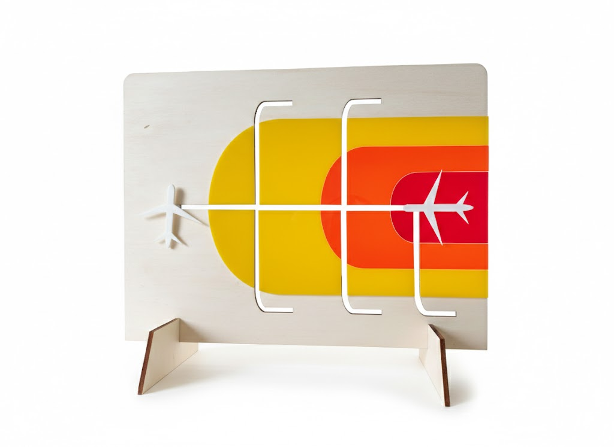

Qui sommes-nous ?
Nous sommes une équipe d'étudiants passionnés par le digital, réunis autour d'un objectif : rendre la technologie aéronautique accessible et captivante.
L'Équipe
Viktor
Développeur Front-end
Mélina
Designer UX/UI
Laura
Rédactrice Contenu
Louanne
Gestion de Projet
Anthony
Prépa Ingénieur
CONSEILLER TECHNIQUEThomas
Prépa Ingénieur
CONSEILLER TECHNIQUEÉtudiants en Communication Digitale, nous avons collaboré avec Anthony et Thomas, futurs ingénieurs, pour garantir la précision technique de ce projet.
Pourquoi ce site sur le T-CAS ?
Un Outil Pédagogique Novateur
Notre but est de créer un support de cours ludique et moderne sur le T-CAS, un système essentiel mais souvent complexe à expliquer. Nous voulions un site qui donne envie d'apprendre, loin des manuels traditionnels.
Vulgariser la Sécurité Aérienne
Le T-CAS est un pilier de la sécurité en vol. Expliquer son fonctionnement de manière simple, pour des élèves de collège ou lycée, est crucial pour sensibiliser aux technologies qui nous protègent dans les airs.
Support pour les Professeurs
Ce site est conçu comme une ressource clé en main pour les enseignants. Que ce soit pour des cours de sciences, de technologie ou de culture générale, il offre des explications claires et un simulateur interactif pour illustrer le propos.
FICHE PRODUIT
Support Tactique Physique "TCAS"

Simulateur Tactique TCAS
Un outil pédagogique innovant qui matérialise les zones de protection invisibles (TA/RA) et les trajectoires d'évitement calculées par l'algorithme TCAS II.
Conçu pour les cours de Technologie au collège, ce support permet aux élèves de manipuler physiquement les avions sur les rails et de comprendre visuellement le passage d'une zone à l'autre.
Public cible : Élèves de collège, professeurs, workshops grand public
1. Spécifications Techniques et Matériaux
| Composant | Matériau | Propriétés |
|---|---|---|
| Panneau vertical | Contreplaqué Peuplier (5mm) | Support rigide, léger, compatible découpeuse laser |
| Pieds supports | Contreplaqué Peuplier (5mm) | Stabilité verticale du dispositif |
| Zones de protection | PMMA (Plexiglas) coloré | Jaune (TA), Orange (Alerte), Rouge (RA) |
| Aéronefs (x2) | Polymère PLA (Bio-plastique) | Impression 3D haute définition |
2. Chaîne de Conception et Fabrication (CAO / FAO)
Conception 2D (CAO)
Design sur Adobe Illustrator. Chaque courbe correspond à une pente réelle pour respecter les marges ALIM (400 à 700 ft).
Modélisation 3D
Modèle haute fidélité adapté de Sketchfab pour l'impression 3D, ajusté aux rails de 5mm.
Usinage (FAO)
Découpeuse Laser (bois + PMMA) + Impression 3D additive avec remplissage optimisé pour la solidité.
3. Logique d'Utilisation (Praxéologie)
Le support fonctionne sur un système de rails à trois niveaux :
- Rail Central : Trajectoire de conflit (collision certaine sans action)
- Rail Supérieur (Climb) : Trajectoire de sauvetage "Monter"
- Rail Inférieur (Descend) : Trajectoire de sauvetage "Descendre"
Objectif pour l'élève : Quitter le rail central pour rejoindre un rail de sécurité dès l'entrée en Zone Rouge, simulant le temps de réaction de moins de 5 secondes.
Coût total : ~45,00 €
- Durabilité : Résiste à des centaines de manipulations
- Fidélité visuelle : Zones colorées identifiables instantanément
- Ergonomie : Avions amovibles pour démonstration
Maintenance et Fin de Vie
- Réparabilité : Avions remplaçables par réimpression 3D
- Environnement : Bois biodégradable, PMMA recyclable via filières spécialisées